我从未想过有朝一日，我可以在 NAS 里看空军一号位置、看外星人目击、看卫星信号、看天灾人祸等等等等。
HadowBroker ，是一个去中心化的情报平台。它将来自 60+ 实时的公共数据集情报源，聚合到单一界面进行展示，而且支持接入 Agent ，完全开源，任何人都可以审计具体访问了哪些数据以及如何访问。
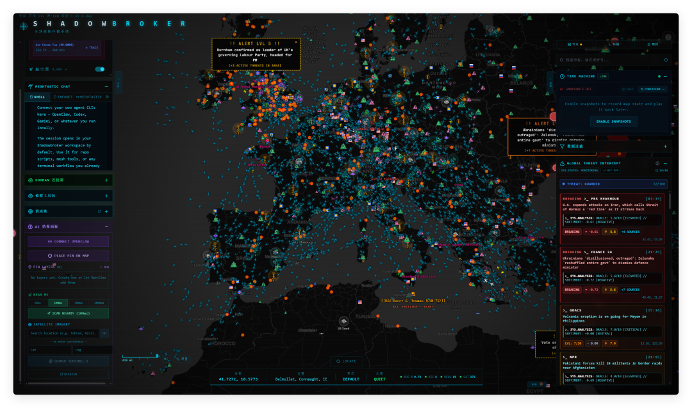
因为要素实在过多，文章里就不一一展示了，密密麻麻的信息看的我头痛，简单介绍一下，然后把部署方式丢出来，有需要的朋友可以自行部署体验。
先看系统数据源，三大核心公共数据：
1️⃣全球 ADS-B 覆盖的航班跟踪，提供实时飞机位置。
2️⃣通过 AIS（自动识别系统）进行实时船舶跟踪。
3️⃣渔船活动事件，适用于“渔业活动”图层。
其中 ADS-B 、AIS 需要专门去注册 OpenSky 和 AIS 的平台账号，然后获取免费的 API Key 来接入。
这俩是必填项，如何不填写的话屏幕就跑不出来数据了。
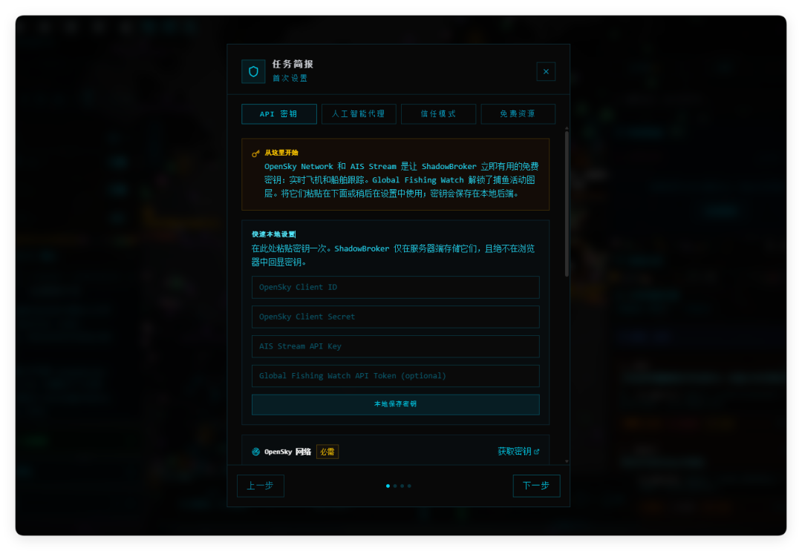
首次登录系统，会有一个配置过程，上面提到的几个核心配置项系统都很贴心的准备了密钥获取方式。
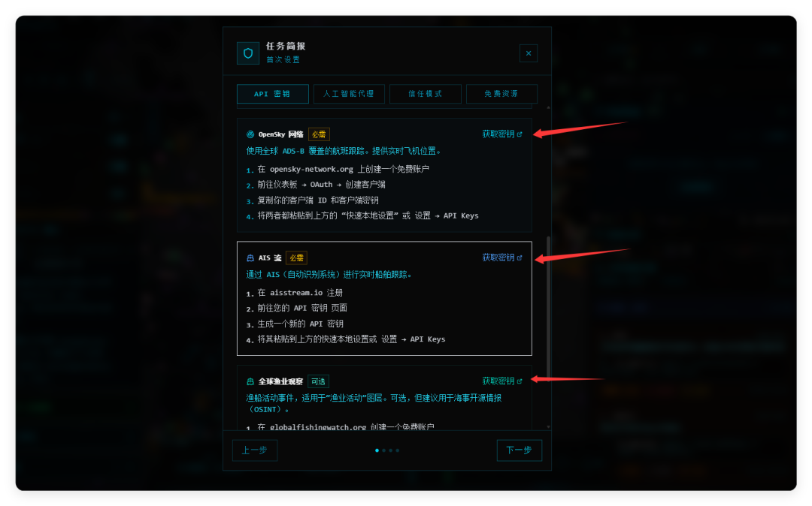
opensky 注册之后，在 Account 里下载 API Client 文件，它是一个 JSON 格式的内容，包含了 ClientID、ClientSecret 两个信息。
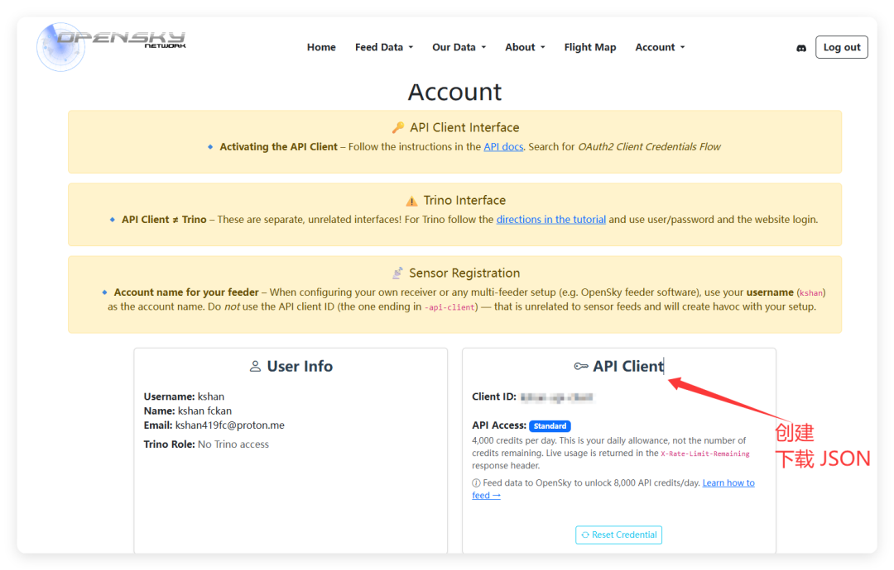
分别填入 HadowBroker 前两个配置项里就可以。
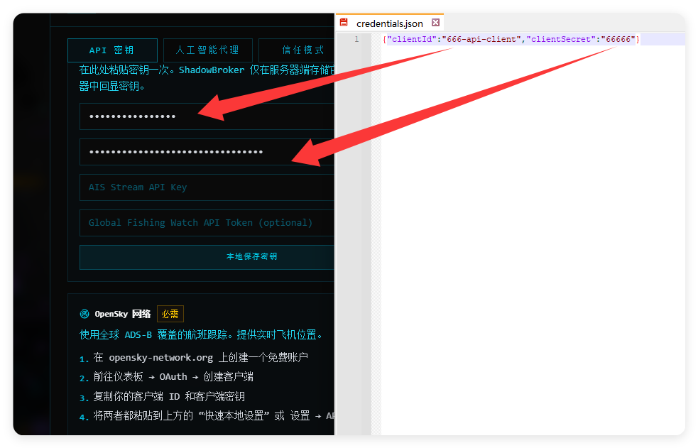
第三个配置项 AIS ，同样注册后会自动弹出 API Key 申请页面，在里面复制填入即可。
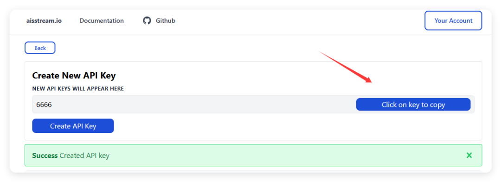
系统侧边栏，包含了所有数据源提供的信息。大致上分为了航空、太空、灾害、UAP、生物、信号、基础设施等等信息。
每个分类下又有大量的细分子类，如果看满屏的数据不爽，直接按需关闭、开启要看的内容。
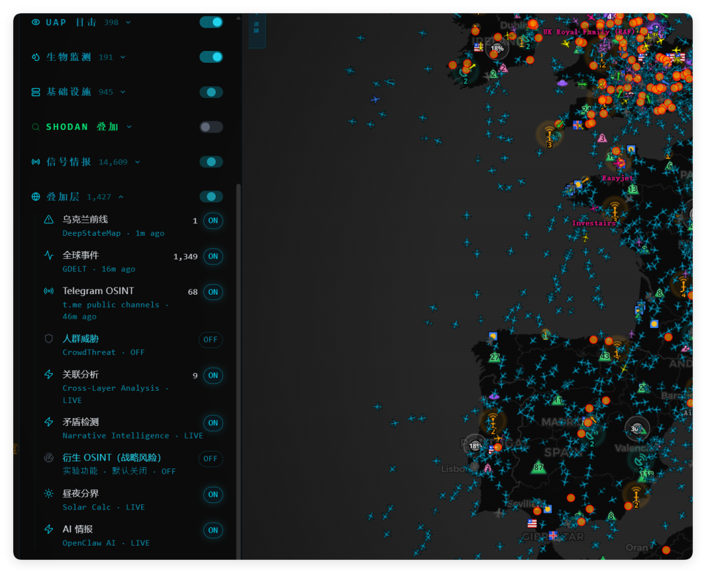
系统右侧，提供了一个数据快照，可以定时快照全球信息情报，下面则提供了数据过滤、实时动态滚动播放的效果，非常牛逼。
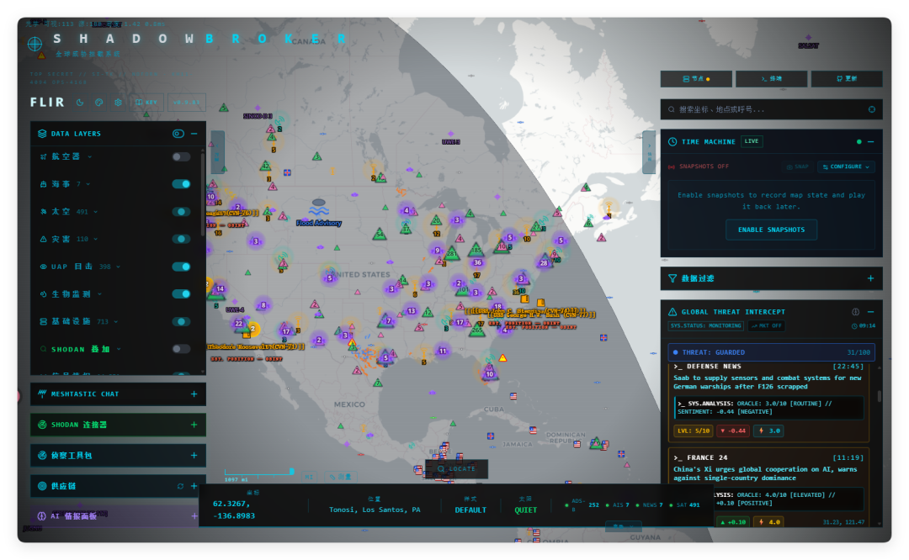
当然更重要的是 HadowBroker 提供了 Agent 的接入工具，可以直接让 Agent 操控和管理 HadowBroker。
里面有一个提示词，但是我建议不要复制，因为 Agent 不会遵循。直接复制 URL 让 Agent get 信息即可。
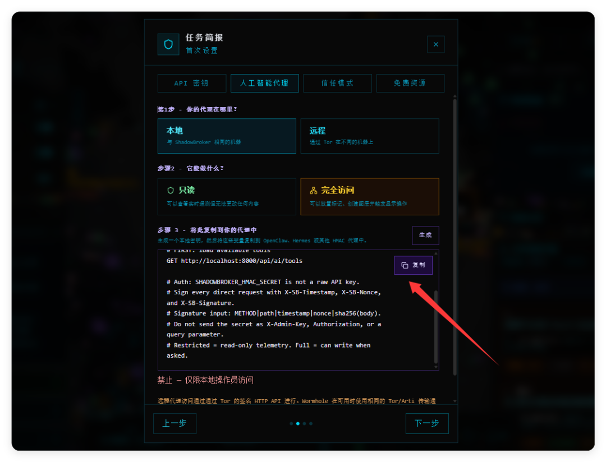
比如我让将其接入了 WorkBuddy，光是只读信息就可以查询某个航班、某个船只在哪里，查询某个区域在发生什么事情，以及最近的新闻广播等等。
也就是说，各位国新爱好者可以通过 Agent 和 NAS 在和帖友 Battle 的时候获取一手消息。
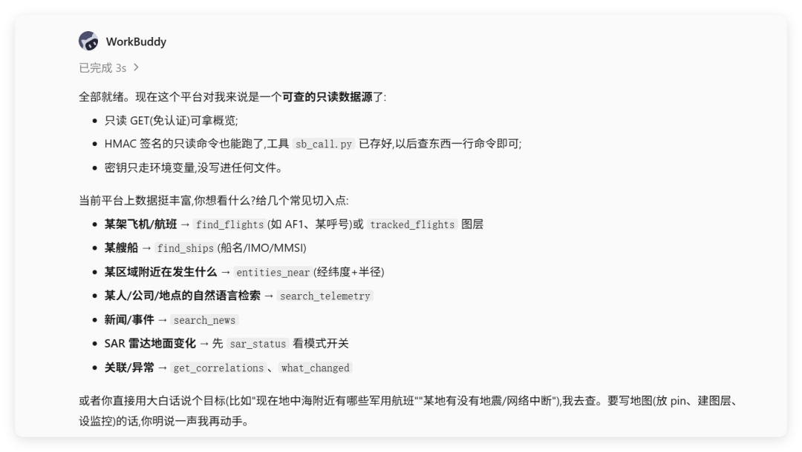
比如我问 WorkBuddy，帮我查询一下空军一号现在的位置。它查了查，哦，现在似乎没有飞，或者信息被屏蔽了。不过我知道空军二号现在在哪里，然后它把它的经纬度、高度位置等等信息都直接告诉我了。
呵呵，有点儿猛对不对。
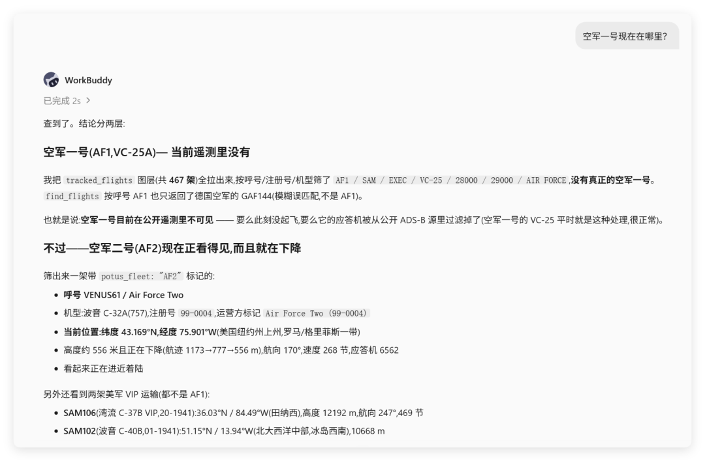
多的不说了，下面我们来到部署环节。
依旧是我们的威联通专场，我觉得威联通特别适合作为一台 AI NAS 使用。小道消息称，其手机 APP 正在研发更新的 NAS Assistant 等功能，通过手机对话就可以管理和操作 NAS 行为。
这个等我证实和获得更多消息后，再来给大家分享。
我们来到威联通的 Container Station 容器工作站，创建一个新的应用程序，然后把下面的 docker-compose.yaml 代码复制进去部署。
services:
backend:
image: ghcr.io/bigbodycobain/shadowbroker-backend:latest
container_name: shadowbroker-backend
ports:
- "18123:8000"
environment:
- MESH_INFONET_FLEET_JOIN=false
- MESH_MQTT_INCLUDE_DEFAULT_ROOTS=false
- SHADOWBROKER_TRUST_DOCKER_BRIDGE_LOCAL_OPERATOR=1
- SHADOWBROKER_TRUSTED_FRONTEND_HOSTS=frontend,shadowbroker-frontend
- NEWS_ENABLED=true
- TELEGRAM_OSINT_ENABLED=true
volumes:
- backend_data:/app/data
restart: unless-stopped
healthcheck:
test: ["CMD", "curl", "-f", "http://localhost:8000/api/health"]
interval: 15s
timeout: 10s
retries: 5
start_period: 60s
frontend:
image: ghcr.io/bigbodycobain/shadowbroker-frontend:latest
container_name: shadowbroker-frontend
ports:
- "13123:3000"
environment:
- BACKEND_URL=http://backend:8000
depends_on:
backend:
condition: service_healthy
restart: unless-stopped
healthcheck:
test: ["CMD", "wget", "-q", "--spider", "http://127.0.0.1:3000/"]
interval: 30s
timeout: 10s
retries: 3
start_period: 20s
volumes:
backend_data:第一次跑完的时候，容器可能会一直重启，或者自动停止，没关系不用管。我们重新启动一次就可以顺利打开了。
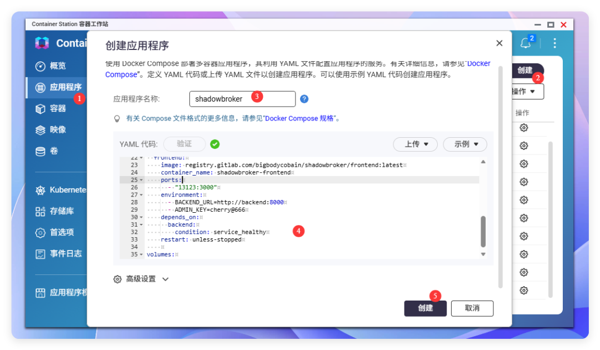
非常有意思的一个项目，在 Github 上拥有 9.8K Star，而且更新也比较勤快的。它甚至接入了纽约部分地区的在线监控... 但是前提你得有优化后的网络。总之，如果你对网络信息比较有兴趣的，千万不要错过这个项目。
往期推荐：
NAS 教程： 1️⃣无限子弹来了，AI NAS 新标杆，实测性能猛兽 — 铭凡N5 MAX 2️⃣「肌肉记忆法」学外语，给 NAS 装一个孩子学习的超级外挂 3️⃣小米NAS 硬件拆解，硬件值得肯定，软件妥妥一..... |
AI 玩法： 1️⃣B站下场了，视频创作变天，多 Agent + Skill 社区 + 本地客户端 3️⃣100+ 导演 Skill 彻底开放！几十块成本，小白可以直接把脑洞变视频了 |